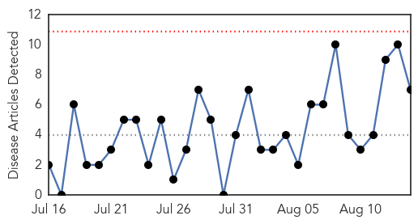
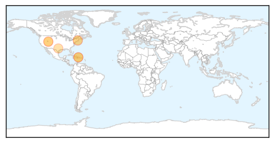
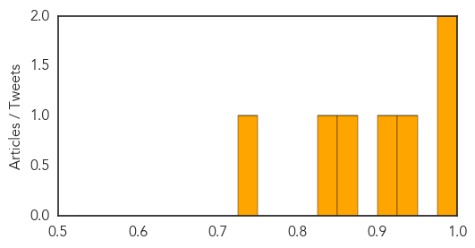
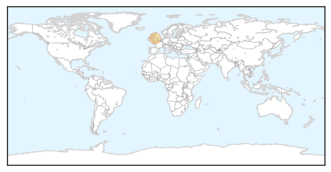

West Nile Virus
30-Day Web Trend
0 alerts, 0 warnings

30-Day Twitter Trend
0 alerts, 0 warnings

Article Locations
Article Confidences
Top Articles:
- 0.992
- Mississippi confirms first West Nile virus-related death
- 0.988
- First West Nile Virus Incident in Greece this Year
- 0.941
- First West Nile death confirmed
- 0.908
- Mosquito fight is on in Utah's battle to stop West Nile virus
- 0.872
- West Nile found in Utah County
- 0.832
- Mosquitoes With West Nile Found in East Boston
- 0.743
- First ’14 case of West Nile found in RI
Top Tweets:
-
No tweets found for Aug 14, 2014
Measles
30-Day Web Trend
0 alerts, 0 warnings

30-Day Twitter Trend
0 alerts, 0 warnings

Article Locations
Article Confidences

Top Articles:
Top Tweets:
-
No tweets found for Aug 14, 2014